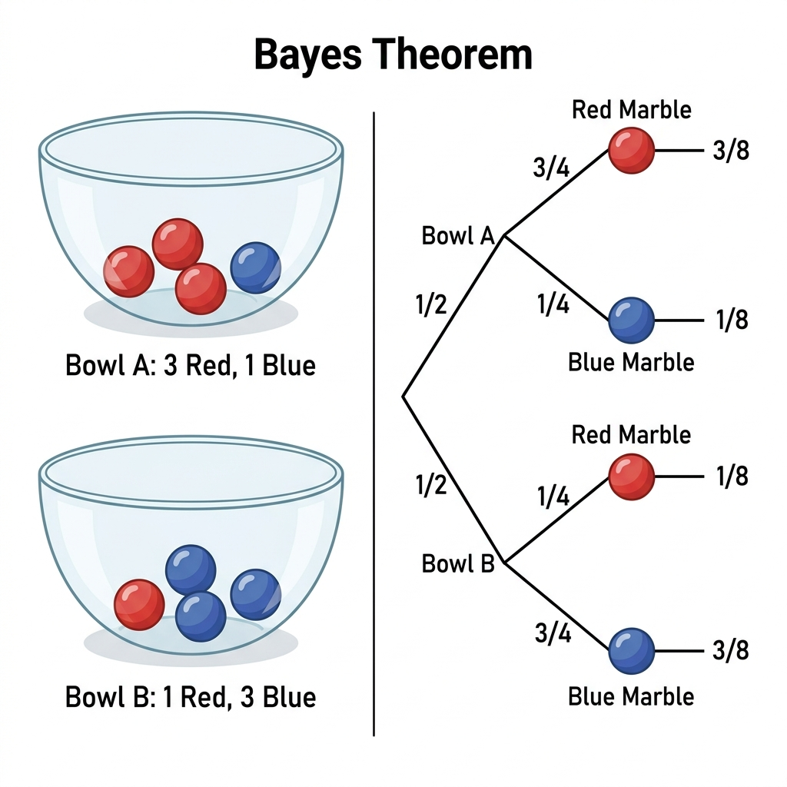

Foundations of Probability#
Probability is the mathematical language used to quantify uncertainty. In Data Science and Machine Learning, we rarely have perfect data or complete information about the real world. Therefore, probability helps us make the most reasonable predictions based on available data.
This chapter introduces the core concepts of probability, moving from intuition to rigorous mathematical definitions.
1. Sample Space and Events#
Imagine you flip a coin. The outcome can be Heads (H) or Tails (T).
Experiment: An action with an uncertain outcome (e.g., flipping a coin).
Sample Space (\(\Omega\)): The set of all possible outcomes of an experiment.
Example (Coin): \(\Omega = \{H, T\}\)
Example (Die): \(\Omega = \{1, 2, 3, 4, 5, 6\}\)
Event (\(E\)): A subset of the sample space. It is the set of outcomes we are interested in.
Example: Let \(E\) be the event “rolling an even number”. Then \(E = \{2, 4, 6\}\).
In Python, we can simulate simple events using sets:
# Sample space when rolling a single die
Omega = {1, 2, 3, 4, 5, 6}
# Event E: rolling an even number
E = {2, 4, 6}
# Does the event occur if the roll result is 4?
roll_result = 4
is_event_E = roll_result in E
print(f"Did Event E occur? {is_event_E}") # True
2. Probability Measure and Kolmogorov’s Axioms#
From an intuitive (Frequentist) perspective, the probability of an event is the proportion of times that event occurs if we repeat the experiment a large number of times.
(This formula applies when the outcomes in the sample space are equally likely).
However, to establish a rigorous mathematical foundation, mathematician Andrey Kolmogorov introduced 3 axioms for the probability measure \(P\):
Non-negativity: The probability of any event cannot be negative.
\[ P(E) \ge 0 \]Normalization: The probability of the entire sample space is always 1 (it is certain that some outcome in the sample space will occur).
\[ P(\Omega) = 1 \]Additivity: If two events \(A\) and \(B\) are mutually exclusive (they cannot occur simultaneously, meaning \(A \cap B = \emptyset\)), then the probability of \(A\) or \(B\) occurring is the sum of their individual probabilities.
\[ P(A \cup B) = P(A) + P(B) \]
From these 3 axioms, we can derive all other probability rules, for example: \(P(E^c) = 1 - P(E)\) (where \(E^c\) is the complement of \(E\)).
3. Conditional Probability and Independence#
Conditional Probability#
In reality, gaining new information can change the likelihood of an event occurring. Conditional probability \(P(A|B)\) is the probability of event \(A\) occurring given that event \(B\) has already occurred.
Intuition: The original sample space \(\Omega\) is now restricted to just \(B\). We examine what proportion the intersection of \(A\) and \(B\) takes up within this new space \(B\).
Independence#
Two events \(A\) and \(B\) are considered independent if the occurrence of \(B\) provides no additional information about whether \(A\) will occur (and vice versa).
Mathematically:
Which is equivalent to:
4. Bayes’ Theorem and Law of Total Probability#
Bayes’ Theorem#
From the conditional probability formula, we have \(P(A \cap B) = P(A|B)P(B)\) and \(P(B \cap A) = P(B|A)P(A)\). Since \(P(A \cap B) = P(B \cap A)\), we can derive the famous Bayes’ Theorem:
In Machine Learning, this theorem is often understood from the perspective of updating beliefs (Bayesian Inference):
\(P(A)\) (Prior): Our initial belief about hypothesis \(A\) before seeing the data.
\(P(B|A)\) (Likelihood): The probability of observing the data \(B\) if hypothesis \(A\) is true.
\(P(B)\) (Evidence): The overall probability of observing the data \(B\).
\(P(A|B)\) (Posterior): Our updated belief about hypothesis \(A\) after observing the data \(B\).
Simple Explanation of Bayes Theorem!#
Imagine you are building a basic Spam Filter. You receive an email containing the word “Free”. What is the probability that this email is Spam?
Bayes’ Theorem states that you cannot just look at the word “Free” and jump to a conclusion. You need to combine 3 pieces of information:
Prior: Generally, what percentage of emails sent to you are Spam? (e.g., 20%).
Likelihood: Among the emails that are definitely Spam, what percentage contain the word “Free”? (e.g., Scammers use this word a lot \(\rightarrow\) 80%).
Evidence: Overall, in all emails (both real and Spam), how often does the word “Free” appear? (e.g., Legitimate companies also send promotional emails like “Free shipping” \(\rightarrow\) 25%).
Plugging it into the formula:
Conclusion: Even though the word “Free” appears frequently in spam (80%), because the overall volume of spam is relatively low (20%) and normal emails also use this word, the actual probability that the email is spam is only 64% (not certain enough to delete it outright). This is how Bayes helps AI (and humans) reason logically and avoid hasty conclusions!
Another Example: The Two Bowls#
Let’s consider a classic probability puzzle: Imagine you have two bowls in front of you. You close your eyes, pick a bowl at random, and then draw a single marble from it.
Bowl 1 contains 4 marbles: 3 Red and 1 Blue.
Bowl 2 contains 4 marbles: 1 Red and 3 Blue.
You open your eyes and see that the marble you picked is Red. What is the probability that you picked from Bowl 1?

Fig. 12 AI-generated Bayes’ Theorem Infographic Diagram for the Two Bags Problem.#
Let’s break this down using Bayes’ Theorem:
Prior (\(P(\text{Bowl 1})\)): Before looking at the marble, you picked a bowl at random. Since there are two bowls, the probability is \(0.5\) (or 50%).
Likelihood (\(P(\text{Red} | \text{Bowl 1})\)): If you were definitely drawing from Bowl 1, what is the chance of getting a Red marble? There are 3 Red out of 4, so it’s \(3/4 = 0.75\).
Likelihood for the other bowl (\(P(\text{Red} | \text{Bowl 2})\)): If you were drawing from Bowl 2, the chance is \(1/4 = 0.25\).
Evidence (\(P(\text{Red})\)): What is the total probability of drawing a Red marble overall? We use the Law of Total Probability (explained in the next section):
\[\begin{split} \begin{align*} P(\text{Red}) &= P(\text{Red} | \text{Bowl 1}) \times P(\text{Bowl 1}) + P(\text{Red} | \text{Bowl 2}) \times P(\text{Bowl 2}) \\ &= 0.75 \times 0.5 + 0.25 \times 0.5 \\ &= 0.375 + 0.125 \\ &= 0.5 \end{align*} \end{split}\]
Now, applying Bayes’ formula:
Conclusion: Given that you drew a Red marble, there is a 75% chance that you drew it from Bowl 1. This perfectly matches our intuition because Bowl 1 has way more red marbles!
Law of Total Probability#
To calculate the denominator \(P(B)\) in Bayes’ Theorem, we often use the law of total probability. If the sample space \(\Omega\) is partitioned into mutually exclusive events \(A_1, A_2, ..., A_n\) (meaning they cover the entire sample space and do not overlap), then:
Python Example: Medical Diagnosis#
Suppose there is a rare disease that only 1% of the population has (\(P(D) = 0.01\)). A test has an accuracy of 99% for people with the disease (\(P(+|D) = 0.99\)) and a false positive rate of 5% for healthy people (\(P(+|D^c) = 0.05\)). If a person tests positive (+), what is the probability they actually have the disease (\(P(D|+)\))?
# Probability of having the disease (Prior) and not having it
p_disease = 0.01
p_no_disease = 1 - p_disease
# Probability of a positive test (Likelihood)
p_pos_given_disease = 0.99
p_pos_given_no_disease = 0.05
# Law of total probability: Probability of getting a positive test (Evidence)
p_pos = (p_pos_given_disease * p_disease) + (p_pos_given_no_disease * p_no_disease)
# Bayes' Theorem: Probability of disease given a positive test (Posterior)
p_disease_given_pos = (p_pos_given_disease * p_disease) / p_pos
print(f"Probability of disease given positive test: {p_disease_given_pos:.2%}")
# Output: Probability of disease given positive test: 16.67%
Are you surprised? Even though the test seems very accurate (99%), because the disease is so rare (1%), most positive results are actually false positives! This is the power of Bayes’ Theorem in correcting human intuition.